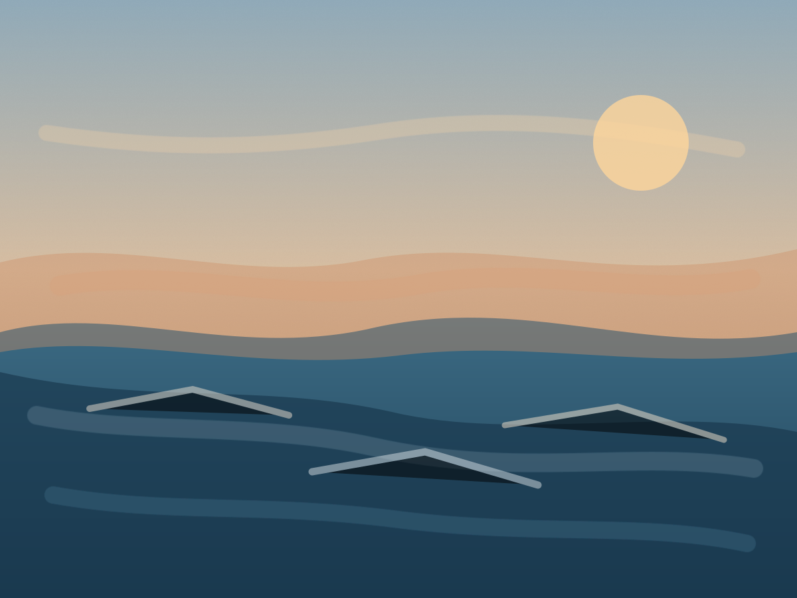
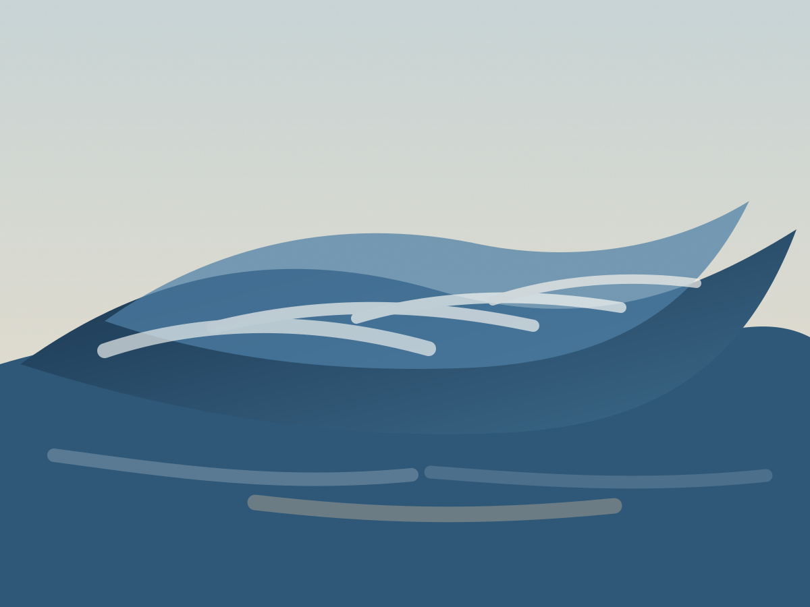
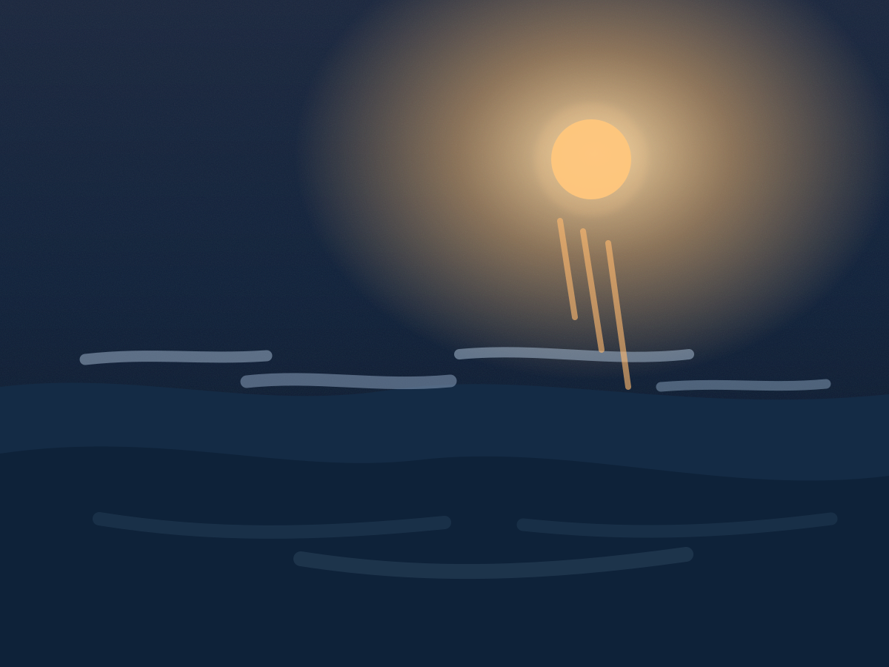

Welcome to the studio of Shaun Miyamoto.
This is a space to explore paintings and studies shaped by memory, landscape, and movement. You can browse recent works, view exhibition highlights, and reach out for commissions, collaborations, or press inquiries.
Selected Works
A curated set of recent works with local artwork images and descriptive accessibility labels.

Fractured Horizon

Night Current
About the Artist
Artist Statement
I paint to hold onto fleeting moments of place, where memory and observation overlap. Through layered marks, I look for the quiet tension between land, weather, and built spaces, inviting viewers to move through each work slowly and find their own point of recognition.
Shaun Miyamoto is a contemporary artist whose work centers on memory, atmosphere, and the emotional shape of place. His paintings begin with direct observation, then evolve through layered revisions that hold onto both what was seen and what was felt.
Working primarily from his Honolulu studio, he develops each piece over multiple sessions, building surfaces with oil, charcoal, and mixed media. This process allows traces of earlier marks to remain visible, creating a sense of time and movement inside every composition.
Recurring themes in his practice include shifting coastlines, urban edges, weather patterns, and the relationship between architecture and natural light. Rather than documenting a single location literally, the work combines fragments from different places to form landscapes that feel both familiar and unsettled.
His work has been presented in solo and group exhibitions across Hawaii and the U.S. West Coast, with pieces held in private collections and public-facing spaces. Current studio focus includes large-format oils and mixed media studies, with select commission openings for 2026.
Upcoming Exhibitions
Several upcoming showings are scheduled across Hawaii and the U.S. West Coast.
- August 14, 2026 - Tidal Memory, Kalo Gallery, Honolulu
- October 3, 2026 - Harbor Drift, Harbor House, Los Angeles
- December 12, 2026 - Light Over Concrete, Eastline Project Space, Portland
- February 20, 2027 - Weather Marks, Collective Studio, Seattle
- April 9, 2027 - Saltline Variations, Makai Arts Center, San Diego
- June 18, 2027 - After Rain, North Harbor Gallery, San Francisco
- August 27, 2027 - Terrain Signals, Kalo Gallery Annex, Honolulu
- November 6, 2027 - Evening Contours, Riverfront Project Space, Sacramento